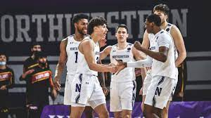

Boo Buie

Boo Buie is Northwestern's starting point gaurd. He is critical to the success of the team and is often the firepower behind Northwestern's offense. As a senior, this is his last year to try to take the team to the NCAA Tournament.
Northwestern Men's basketball kicked off the year with a strong start as they hope to make the NCAA Tournament for the second time in school history. Here, we'll take a look at their first month of games and highlight 5 key players.
By Liam Hubbard
Check out the full team roster here.
Boo Buie is Northwestern's starting point gaurd. He is critical to the success of the team and is often the firepower behind Northwestern's offense. As a senior, this is his last year to try to take the team to the NCAA Tournament.

Chase Audige is Northwestern's starting shooting guard. He's another vital aspect of the team. He and Buie combine for most of the teams offense. On the defensive end, he is one of the strongest defenders in the Big 10.

Robbie Beran is another key member of the team. He's averaging nearly 10 points per games and he helps create shot opportunities for his team mates.

Matt Nicholson is Northwestern's starting center. His role is crucial as he brings in the size for the squad. Nicholson's biggest strength comes in his rebounding ability.

Ty Berry's contributions come from behind the three-point line. He often enters the game to give his teammates the spark they need to get momentum. He's quick, effecient, and a valuable member of the Wildcats.